07: Transformers: More than Meets the Eye
Links
Transformers & Attention
- The Illustrated Transformer — Jay Alammar’s visual walkthrough
- Everything About Transformers — story-driven visual reference
- Transformer Explainer — interactive tool
- Attention is All You Need — the original 2017 paper
- Attention mechanism paper (2015) — Bahdanau attention
- Building Transformers from Scratch — code-first guide
- Visual introduction to Attention
- Multi-head attention deep dive
Building GPTs
- microGPT blog — 200-line, zero-dependency GPT
- microGPT visualizer — interactive GPT internals visualization
- nanoGPT repo — minimal GPT training code
- Karpathy’s Zero to Hero — neural network video series
- Let’s Build GPT (YouTube) — building GPT from scratch
- GPT-2 WebGL visualizer
LLMs
- Post-Chatbot Era (The Atlantic) — zeitgeist piece on where AI is heading
- List of open source LLMs
- GPT (2018) paper
- RLHF paper — Reinforcement Learning from Human Feedback
- DistilBERT paper — knowledge distillation
Healthcare AI
- UCSF Versa — institutional LLM tool (sunsetting soon)
- UCSF ChatGPT Enterprise — Versa replacement (coming online March 2026)
- Google Med-PaLM — medical LLM research
- Azure Text Analytics for Health
Prompt Engineering Guides
- Anthropic: docs.anthropic.com/en/docs/build-with-claude/prompt-engineering
- OpenAI: platform.openai.com/docs/guides/prompt-engineering
- OpenAI examples: platform.openai.com/docs/examples
Where to Play Around
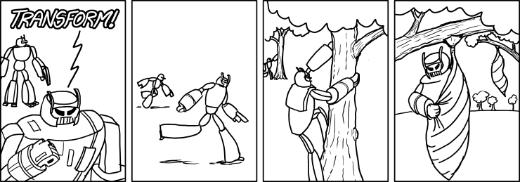
From Neural Networks to Transformers
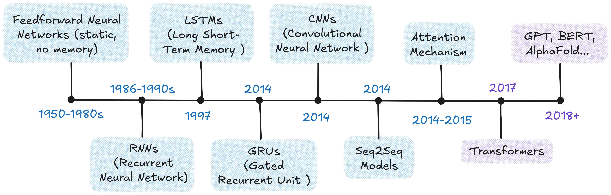
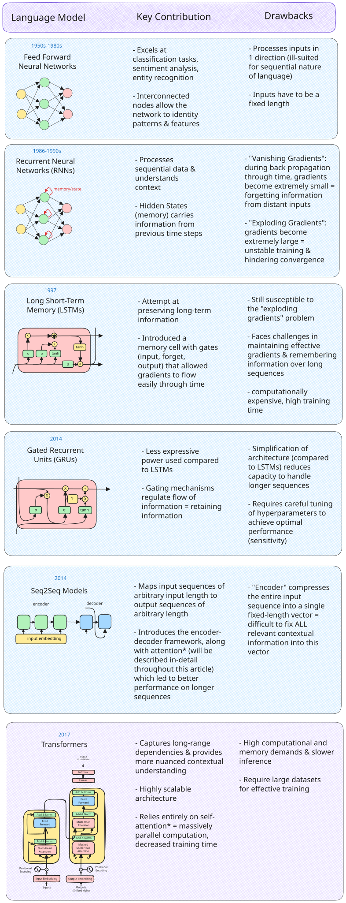
The Scale-Up Era (2018–)
- ELMo (2018): contextualized word embeddings — same word, different vector depending on context
- BERT (2018): bidirectional training; dominated NLP benchmarks
- GPT (2018): unidirectional, predict-the-next-token — the design behind all modern LLMs
- T5 (2019): every NLP task as text-to-text
- GPT-3 (2020): 175B parameters; few-shot learning from examples in the prompt alone
- ChatGPT (2022): GPT-3.5 + RLHF; 100M users in two months
- Open-weight models (2023–): Llama, Mistral — competitive models you can run locally
- Reasoning models (2024–): o1/o3, DeepSeek-R1 — chain-of-thought at inference time
- Agentic AI (2025–): models that use tools, write code, and orchestrate multi-step workflows
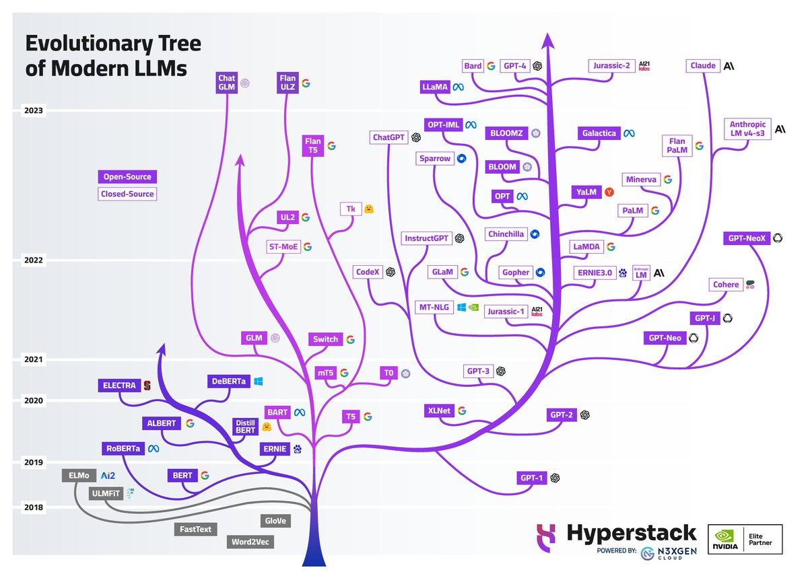
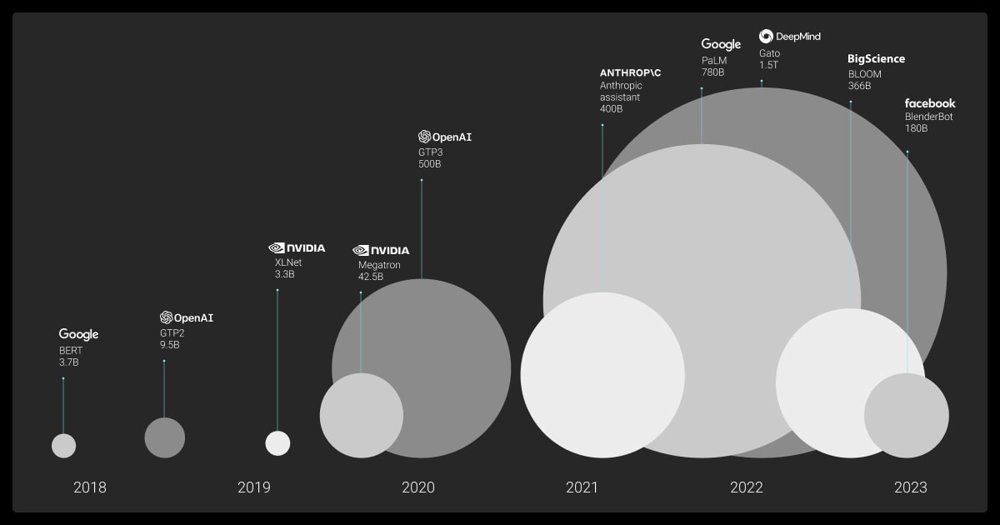
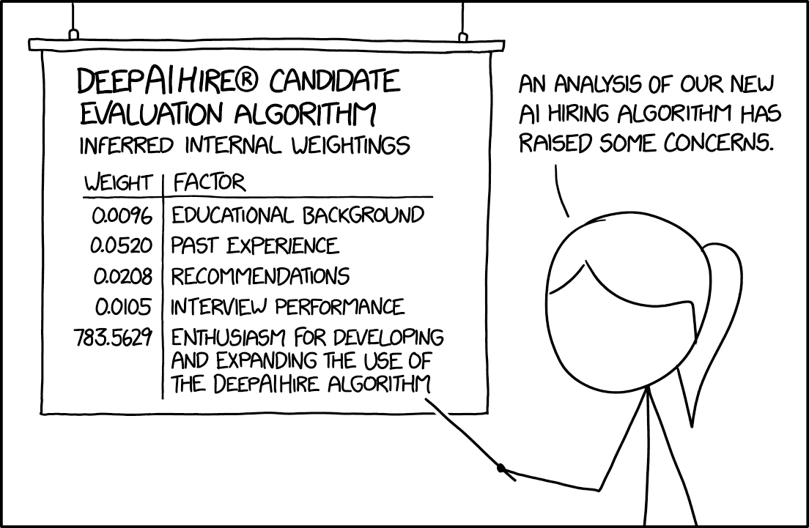
Transformer Architecture
The Problem: Processing Everything at Once
Transformers process the full sequence in parallel, but that creates a new problem: how does any token know about any other token? The answer is attention.
The original transformer uses an encoder-decoder structure:
- Encoder: reads the entire input, builds a rich representation
- Decoder: uses that representation to generate output one token at a time
- Both are stacks of 6 identical layers (same structure, different learned weights)
- Pipeline: Tokenize → Embed → Add positional encodings → Stack attention layers → Generate output
Modern LLMs have largely converged on a decoder-only design. It turns out you don’t need a separate “understanding” step. Instead of encode-then-decode, concatenate everything: context, question, partial answer. Then train a single decoder stack to predict the next token.
Self-Attention: Letting Tokens Talk
- “The animal didn’t cross the street because it was too tired.” — what does “it” refer to?
- “The doctor told the nurse that she would handle the next patient after she finished the paperwork.” Which “she” is which?
- “The trophy didn’t fit in the suitcase because it was too big.” — is “it” the trophy or the suitcase?
These ambiguities are trivial(ish) for humans but require the model to weigh every token’s relationship to every other token simultaneously. Self-attention does exactly that — each token computes how much it should attend to every other token, resolving these references in a single step.
How It Works: Query, Key, Value
For each token, the model creates three vectors from learned weight matrices:
- Query (Q): What this token is looking for
- Key (K): What this token offers to others
- Value (V): The actual content to retrieve
For a 3-token input — “cat,” “sat,” “mat” — each embedding is multiplied by learned weight matrices \(W_Q\), \(W_K\), \(W_V\) to produce Q, K, V vectors. From the perspective of “cat”:
- Score: Compute the dot product of \(Q_\text{cat}\) against every token’s Key:
- \(Q_\text{cat} \cdot K_\text{cat} = 112\), \(Q_\text{cat} \cdot K_\text{sat} = 96\), \(Q_\text{cat} \cdot K_\text{mat} = 78\)
- Scale: Divide by \(\sqrt{d_k} = \sqrt{4} = 2\): scores become \(56, 48, 39\)
- Softmax (convert scores to probabilities summing to 1): \([0.73, 0.22, 0.05]\) — “cat” attends mostly to itself and somewhat to “sat”
- Weighted sum: \(0.73 \cdot V_\text{cat} + 0.22 \cdot V_\text{sat} + 0.05 \cdot V_\text{mat}\) — a new representation of “cat” that blends information from the whole sequence
Repeat for every token. That’s self-attention.
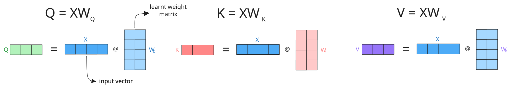
Code Snippet: Simplified Attention
The function below implements the core attention calculation in pure numpy. It takes query, key, and value matrices, computes scaled dot-product scores between all pairs of tokens, normalizes them with softmax to get attention weights, then uses those weights to blend the value vectors into context-aware representations.
import numpy as np
def scaled_dot_product_attention(query, key, value):
"""Compute scaled dot-product attention (pure numpy)."""
d_k = query.shape[-1]
scores = query @ key.T / np.sqrt(d_k)
weights = np.exp(scores) / np.exp(scores).sum(axis=-1, keepdims=True) # softmax
return weights @ valueMulti-Head Attention
Language has many simultaneous relationships — syntax, semantics, entity references, temporal ordering. Multi-head attention runs multiple attention operations in parallel, each with its own learned Q/K/V matrices, so each head can specialize.
- 8 heads, 512-dim embeddings → 64 dims per head
- Results are concatenated and projected back to full dimension
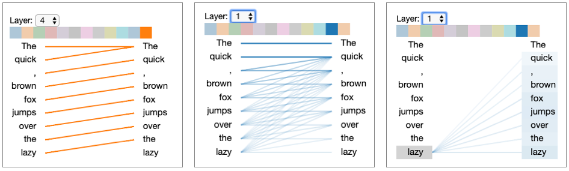
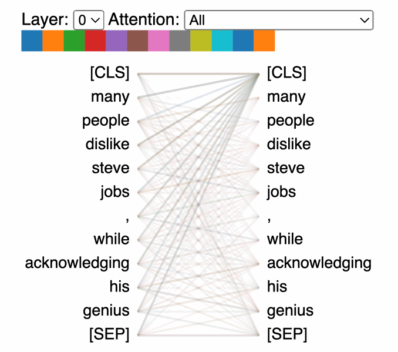
Putting It Together
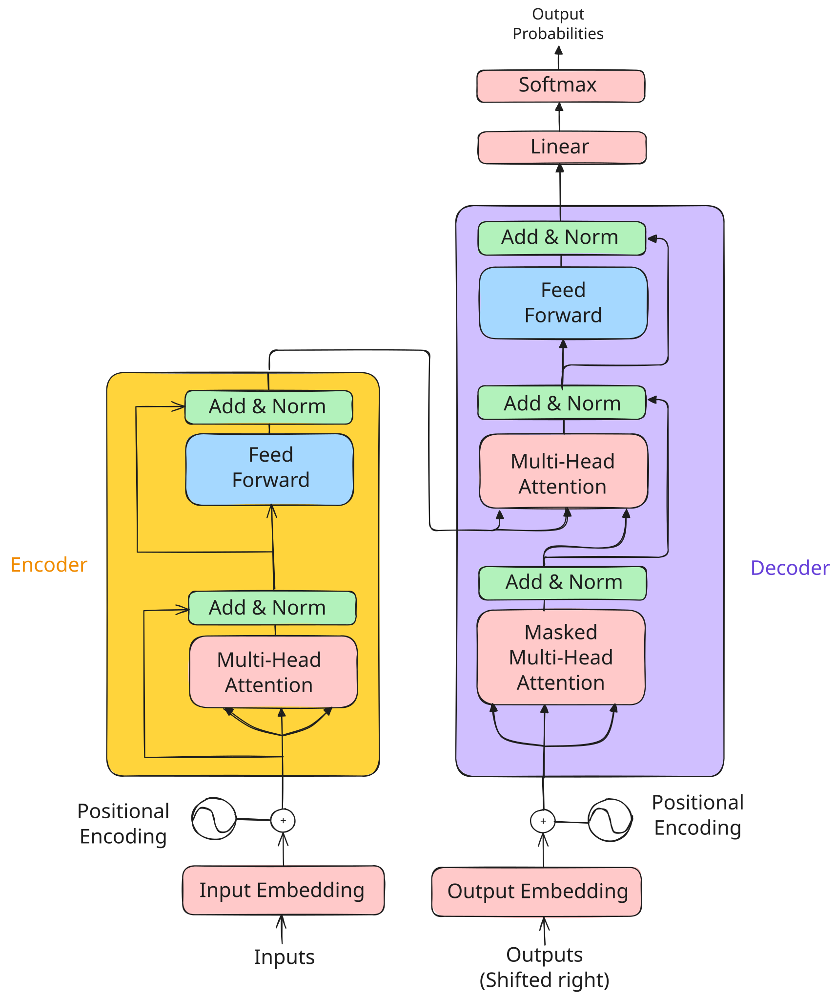
How training works:
- The encoder reads the source sequence; the decoder generates the target one token at a time.
- Cross-attention bridges the two — in the architecture diagram, it’s the middle attention block in each decoder layer where the decoder’s queries attend to the encoder’s keys and values.
This is how the decoder “reads” the input: it asks “given what I’ve generated so far, what parts of the input should I focus on next?” Cross-entropy loss measures prediction error, gradients flow back, and the Adam optimizer updates weights.
Repeat over billions of examples…
Reference Card: Transformer Components
| Component | What Problem It Solves | Details |
|---|---|---|
| Input Embedding | Discrete tokens → continuous space | Maps each token to a dense vector the network can process |
| Positional Encoding | Attention is order-agnostic | Injects position information so the model can distinguish word order |
| Multi-Head Attention | Single attention can’t specialize | Each head focuses on different aspects (syntax, semantics, entity references) |
| Cross-Attention | Decoder needs to read the input | Decoder queries attend to encoder keys/values — “what did the input say?” |
| Feed-Forward Network | Attention blends but can’t transform | Two-layer network (expand 4x, activate, contract) applied at each position |
| Layer Normalization | Deep networks have unstable signals | Rescale activations to mean=0, variance=1 within each layer |
| Residual Connections | Deep networks have vanishing gradients | Skip connections create gradient highways through the full stack |
| Masking | Decoder can’t peek at future tokens | Sets future positions to \(-\infty\) before softmax |
Beyond Text
- Vision Transformers (ViT): images split into patches, each patch treated as a token
- Time-series: EHR data, sensor readings, financial sequences
- Protein structure: AlphaFold uses attention over amino acid sequences
- Multimodal models: GPT-4o, Gemini, Claude process text, images, and audio together
- Clinical EHR modeling: sequences of diagnosis codes, medications, and lab values over time — each event is a “token” and attention learns which prior events matter for predicting outcomes
- Code and version history: git diffs, code completion (Copilot, Cursor), and automated code review all use transformer architectures
- Music and audio: Whisper (speech-to-text), Jukebox (music generation) treat audio spectrograms as sequences
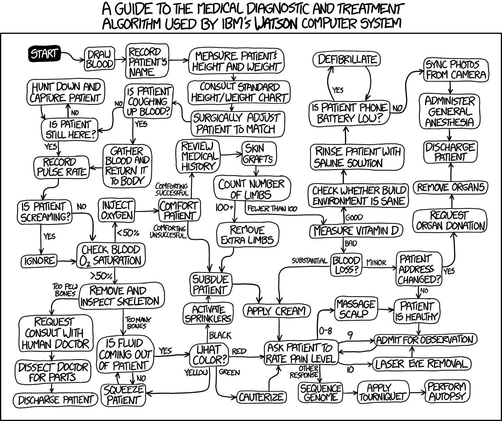
Building a GPT from Scratch
A working GPT in ~200 lines of Python — Karpathy’s microGPT.
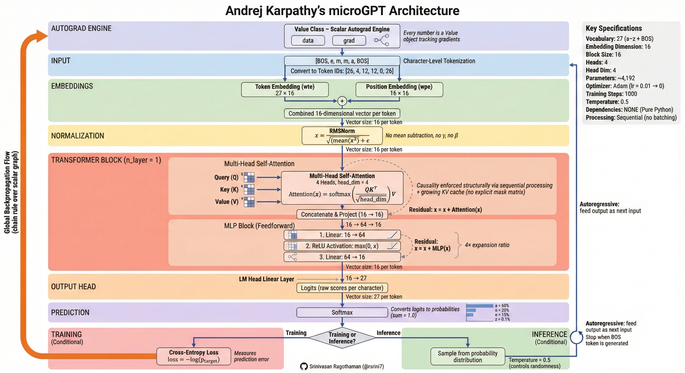
| Band | What It Does |
|---|---|
| Autograd Engine (orange) | Gradient-tracking machinery that powers backpropagation |
| Input | Raw text → characters → integer token IDs |
| Embeddings | Token embedding + position embedding (input embedding + positional encoding) |
| Normalization | Layer norm (RMSNorm) — the “Add & Norm” pattern |
Transformer Block (×n_layer) |
Multi-head self-attention (4 heads × 16 dims) → MLP (feed-forward) with residual connections |
| Output Head | Linear projection from embedding dim → vocabulary size (27 chars) |
| Prediction | Softmax → next-token probabilities |
| Training | Cross-entropy loss (how wrong?) → backprop → Adam optimizer updates weights |
| Inference | Sample from probability distribution; temperature controls randomness |
Scaling to GPT-4 changes the tokenizer, the data (terabytes), and the compute (thousands of GPUs) — but the core algorithm is the same.
LIVE DEMO!
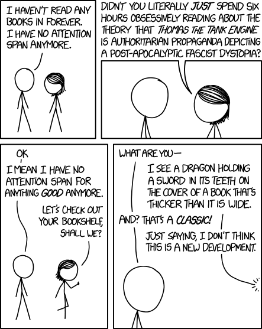
Embeddings
Embeddings map discrete tokens to continuous vectors where meaning is geometry. Similar items cluster together; relationships become directions. Every layer of a transformer produces embeddings — they’re the model’s internal representation of meaning. LLMs like GPT-4 produce rich, high-dimensional embeddings internally, but for practical tasks like search and comparison we typically use smaller, purpose-built models (like Sentence Transformers) because their embeddings are compact enough to store and compare at scale. These representations emerge through training in a self-organizing, unsupervised manner — no one labels which words should be near each other; the geometry arises from patterns in the data.
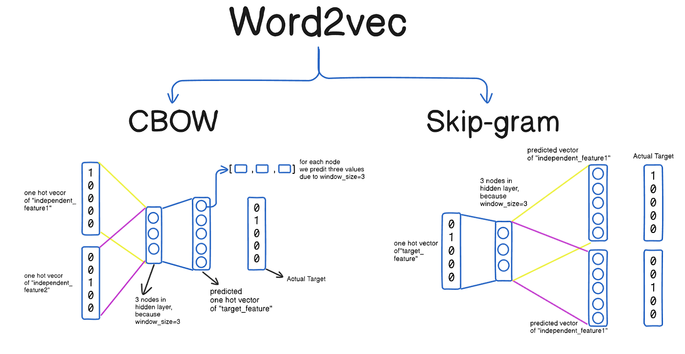
The idea generalizes beyond text — recommendation systems, drug interactions, diagnostic codes, and categorical variables can all be embedded.
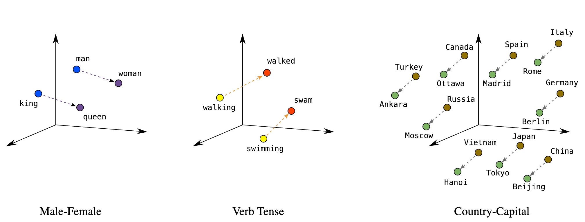
Key applications: semantic search, document clustering, similarity matching, anomaly detection, classification features.
Reference Card: Common Embedding Methods
| Method | Type | Key Characteristic |
|---|---|---|
| Word2Vec | Word-level, static | Learned from co-occurrence; fast to train |
| GloVe (Global Vectors) | Word-level, static | Factorizes co-occurrence matrix; similar to Word2Vec |
| FastText | Subword-level, static | Character n-grams handle misspellings and rare words |
| Sentence Transformers | Sentence-level, contextual | Same word gets different vectors by context; purpose-built for similarity |
Sentence Transformers
Sentence Transformers produce fixed-size vectors for full sentences — contextualized embeddings where “bank” near “river” gets a different vector than “bank” near “money.”
Reference Card: SentenceTransformer
| Component | Details |
|---|---|
| Library | sentence-transformers (pip install sentence-transformers) |
| Purpose | Generate dense vector embeddings for sentences/paragraphs |
| Key Method | model.encode(sentences) — returns numpy array of embeddings |
| Popular Models | all-MiniLM-L6-v2 (fast), all-mpnet-base-v2 (accurate) |
| Output | Fixed-size vectors (e.g., 384 or 768 dimensions) |
Code Snippet: SentenceTransformer
from sentence_transformers import SentenceTransformer
model = SentenceTransformer('all-MiniLM-L6-v2')
sentences = [
"Patient presents with chest pain",
"Acute myocardial infarction suspected",
"Scheduled for routine dental cleaning",
]
embeddings = model.encode(sentences)
print(embeddings.shape) # (3, 384) — three sentences, 384 dimensions eachCosine Similarity
Measures the angle between two vectors, ignoring magnitude.
Reference Card: cosine_similarity
| Component | Details |
|---|---|
| Function | sklearn.metrics.pairwise.cosine_similarity() |
| Purpose | Measure similarity between vectors (1 = identical, 0 = orthogonal, -1 = opposite) |
| Input | Two arrays of shape (n_samples, n_features) |
| Use Case | Compare embeddings to find semantically similar texts |
Code Snippet: Computing and Comparing Embeddings
from sentence_transformers import SentenceTransformer
from sklearn.metrics.pairwise import cosine_similarity
model = SentenceTransformer('all-MiniLM-L6-v2')
## Clinical documents
docs = [
"Patient presents with chest pain and shortness of breath",
"Lab results show elevated troponin levels",
"Patient reports headache and nausea",
]
embeddings = model.encode(docs)
## Find most similar to a query
query_emb = model.encode(["cardiac symptoms"])
similarities = cosine_similarity(query_emb, embeddings)[0]
for doc, sim in sorted(zip(docs, similarities), key=lambda x: -x[1]):
print(f"{sim:.3f} {doc}")Vector Databases
Stores and indexes embedding vectors for fast similarity search at scale.
Reference Card: Vector Database Options
| Database | Type | Strengths |
|---|---|---|
| ChromaDB | In-memory/persistent | Simple API, good for prototyping |
| FAISS (Facebook AI Similarity Search) | In-memory | Fast, scalable, from Meta AI |
| Pinecone | Cloud service | Managed, production-ready |
| Weaviate | Self-hosted/cloud | Full-text + vector search |
| pgvector | PostgreSQL extension | Integrate with existing DB |
Code Snippet: Vector Database with ChromaDB
import chromadb
client = chromadb.Client()
collection = client.create_collection("clinical_notes")
## Add documents (ChromaDB handles embedding automatically)
collection.add(
documents=["Patient has type 2 diabetes", "Elevated troponin, chest pain"],
ids=["note1", "note2"]
)
## Query by semantic similarity
results = collection.query(query_texts=["cardiac symptoms"], n_results=1)
print(results["documents"]) # [['Elevated troponin, chest pain']]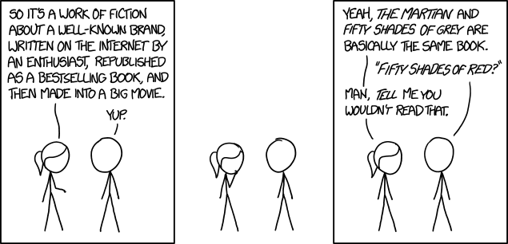
General Models → Getting the Details Right
LLMs are general-purpose — the same model translates, summarizes, classifies, writes code, and reasons. No custom pipeline needed per task. Open-source and open-weight models (Llama, Mistral, DeepSeek) now match or exceed what was state-of-the-art just a year ago — models that would cost millions to train from scratch are freely available as starting points. The practical question isn’t “how do I build a model?” but “how do I get an existing model to do what I need?”
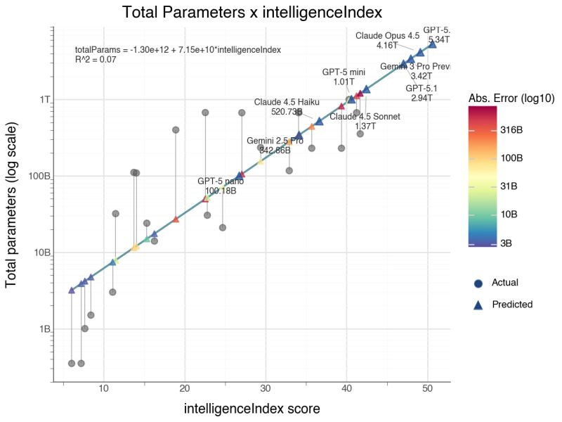
Two approaches to go from a general model to your specific task:
| Approach | When to Use | Effort | Cost |
|---|---|---|---|
| Prompting (recommended default) | Most tasks; fast iteration | Minutes to test | Lower |
| Fine-tuning (specialized cases) | Specialized vocabulary, domain patterns | Days–weeks | Higher |
Fine-Tuning
Continue training a pre-trained model on your domain data. Save it for specialized vocabulary or patterns (e.g., pathology report terminology) where you have hundreds+ labeled examples.
Reference Card: Trainer
| Component | Details |
|---|---|
| Signature | Trainer(model, args, train_dataset, eval_dataset=None, data_collator=None) |
| Purpose | High-level training loop that handles batching, optimization, logging, and checkpointing for fine-tuning pre-trained models. |
| Parameters | • model: A pre-trained AutoModel instance (e.g., GPT2LMHeadModel).• args ( TrainingArguments): Configures output dir, epochs, batch size, learning rate, etc.• train_dataset ( Dataset): Tokenized training data in Hugging Face Dataset format.• eval_dataset ( Dataset, optional): Evaluation data for metrics during training. |
| Returns | TrainOutput with training loss and metrics. Call trainer.train() to start. |
Code Snippet: Fine-Tuning a GPT
from transformers import GPT2Tokenizer, GPT2LMHeadModel, Trainer, TrainingArguments
from datasets import Dataset
tokenizer = GPT2Tokenizer.from_pretrained('gpt2')
tokenizer.pad_token = tokenizer.eos_token
model = GPT2LMHeadModel.from_pretrained('gpt2')
## Tokenize and wrap in a Dataset (Trainer requires this format)
texts = ["Clinical notes about diabetes management", "More clinical text about hypertension"]
tokenized = tokenizer(texts, padding=True, truncation=True, return_tensors="pt")
tokenized["labels"] = tokenized["input_ids"].clone()
dataset = Dataset.from_dict({k: v.tolist() for k, v in tokenized.items()})
training_args = TrainingArguments(
output_dir="./results",
num_train_epochs=3,
per_device_train_batch_size=4,
)
trainer = Trainer(model=model, args=training_args, train_dataset=dataset)
trainer.train()Making Fine-Tuning Practical
Full fine-tuning updates every weight in the model — expensive and often unnecessary. Several strategies reduce cost and tailor the model to your domain:
- Layer freezing: Lock early layers (which learn general language features) and only train the later, task-specific layers. Fewer trainable parameters means faster training, less memory, and lower overfitting risk on small datasets.
- Head replacement: Remove the final layers (closest to the output) from a pre-trained model and replace them with fresh layers trained on your domain data. The frozen base acts as a feature extractor — it already “understands” language — while the new output layers learn your specific task. This is the most common transfer-learning pattern in practice.
- Adapter methods (LoRA, QLoRA): Insert small trainable modules into the frozen model. LoRA adds low-rank weight matrices (~1–5% of original parameters) that learn the domain-specific “delta.” The base model stays untouched, so you can swap adapters for different tasks without retraining from scratch.
- Pruning: Remove redundant weights or attention heads after training to shrink the model for deployment. Useful when you need inference speed on limited hardware without sacrificing much accuracy.
In practice, most teams start with prompting, move to head replacement or LoRA if needed, and rarely do full fine-tuning unless they have substantial compute and data.
Hallucination
No general solution. The model confidently generates plausible-sounding text that may be completely wrong.
Mitigations (none foolproof):
- RAG (Retrieval-Augmented Generation): ground responses in actual documents (Lecture 8)
- Prompt and output design: structured outputs, schema enforcement, require citations
- Human-in-the-loop: expert review, especially for high-stakes decisions
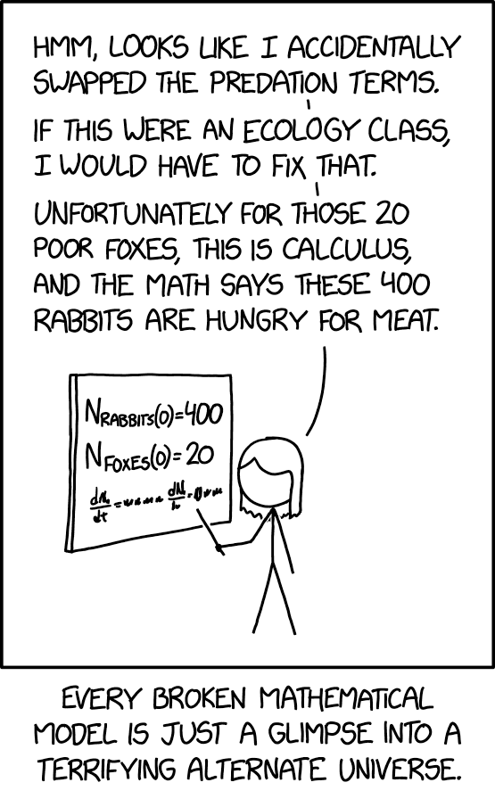
LIVE DEMO!!
Prompt Engineering
“Programming” the model without retraining. Every prompt has the same building blocks:
[ROLE] Who the model should act as [TASK] What needs to be done [FORMAT] How to structure the output [CONSTRAINTS] Boundaries and requirements [EXAMPLES] Concrete input/output pairs
Reference Card: Prompting Techniques
| Technique | Description | When to Use |
|---|---|---|
| Zero-shot | Task description only, no examples | Simple, well-defined tasks |
| One-shot | Single example provided | When pattern is clear from one case |
| Few-shot | 2–5 examples provided | Complex patterns, structured output |
| Chain-of-thought | Ask model to show reasoning step-by-step before answering | Multi-step reasoning tasks (expanded in Lecture 8) |
| Explicit structure | Use XML tags or numbered steps to separate prompt components | Complex prompts with multiple data sources |
| Grounding | Ask the model to extract relevant quotes before answering | Clinical decision support, traceability required |
| Self-verification | Ask the model to check its own output before finishing | Structured extraction, high-stakes tasks |
| Document ordering | Place documents at top, questions at bottom | Multi-document analysis (20K+ tokens) |
Zero-Shot, One-Shot, and Few-Shot Learning
- Zero-shot: task description only, no examples — works for simple, well-defined tasks
- One-shot: single example establishes the pattern
- Few-shot: 2–5 examples — needed for complex output formats or domain-specific conventions
The more structured the task, the more examples help.
Example: Few-Shot Prompting
Extract diagnoses from clinical notes.
Example 1: Note: “Patient presents with elevated blood glucose and polyuria.” Diagnosis: Type 2 Diabetes Mellitus
Example 2: Note: “Chest pain radiating to left arm, elevated troponin.” Diagnosis: Acute Myocardial Infarction
Now extract the diagnosis: Note: “Patient has persistent cough, fever, and infiltrates on chest X-ray.” Diagnosis:
System Prompts
Sets the model’s persona, constraints, and default behavior for the entire conversation. System prompts are sent as a separate message role that persists across the conversation.
Example: System Prompt
You are a clinical documentation assistant.
Rules:
- Use ICD-10 codes when identifying diagnoses
- Flag any findings that need follow-up
- Never provide treatment recommendations
Explicit Structure and Grounding
For complex prompts with multiple inputs, use XML tags or clear section markers to separate components. This reduces errors when the model needs to handle instructions, data, and formatting rules simultaneously.
Ask the model to extract and cite relevant quotes from the source material before generating its answer — this “grounds” the response in evidence and reduces hallucination.
Example: Structured Prompt with Grounding
<instructions> Review the clinical note below. First, extract key quotes that support your assessment. Then provide a structured diagnosis. </instructions>
<clinical_note> 65-year-old male with chest pain, ST elevation in leads V1-V4, troponin elevated at 2.5 ng/mL. Cardiology consulted for emergent catheterization. </clinical_note>
<output_format>
- Supporting quotes from the note
- Primary diagnosis with ICD-10 code
- Confidence level (high/medium/low)
</output_format>
Self-Verification and Chain-of-Thought
Ask the model to reason step-by-step before answering (chain-of-thought), or to check its own output before finishing (self-verification). Both improve accuracy on multi-step reasoning tasks.
Example: Chain-of-Thought with Self-Verification
Review this patient’s medication list for interactions. Think through each pair step by step. After completing your analysis, verify that you checked every combination and didn’t miss any.
Medications: metformin, lisinopril, warfarin, aspirin, omeprazole
Prompt Chaining
Break complex tasks into sequential steps where each prompt’s output feeds into the next.
Step 1: Extract medications from clinical note → list Step 2: For each medication, check for interactions → table Step 3: Summarize findings for clinician → report
This is the foundation of agentic workflows (Lecture 8).
Structured Responses
Machine-readable output (JSON, XML, table) instead of free text. Specify the schema in the prompt, validate programmatically.
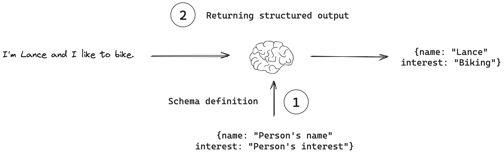
Reference Card: Structured Output Prompting
| Component | Details |
|---|---|
| Schema Definition | Explicitly define JSON structure in prompt |
| Required Fields | List all mandatory fields with types |
| Validation | Parse and validate output programmatically |
| Fallback | Handle parsing errors gracefully |
Example: Schema-Based Prompt
Extract the following information from the clinical note and return it as JSON:
{ "diagnosis": "<primary diagnosis>", "confidence": "<0.0-1.0>", "icd_code": "<ICD-10 code if known>", "reasoning": "<brief explanation>" }Clinical Note: “65-year-old male with chest pain, ST elevation in leads V1-V4, troponin elevated at 2.5 ng/mL. Cardiology consulted for emergent catheterization.”
LLM API Integration
API Access Patterns
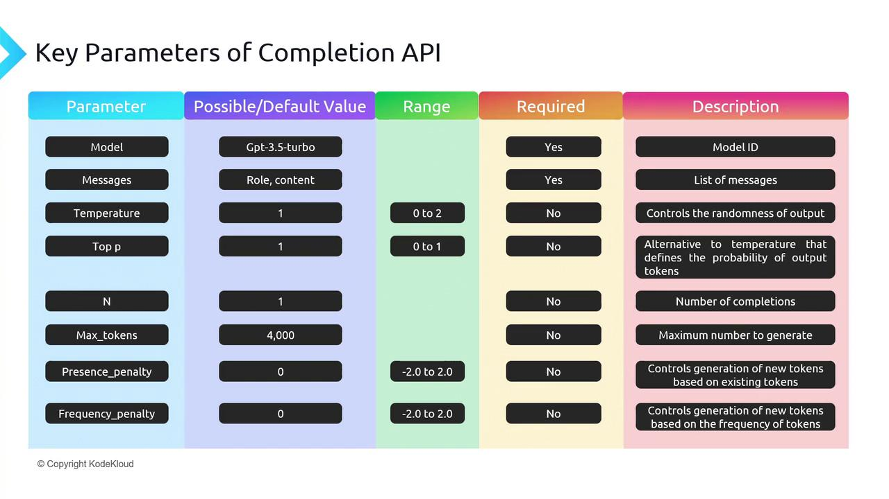
- REST APIs: HTTP endpoints accepting JSON, returning generated text
- SDKs: OpenAI Python, Anthropic SDK; OpenAI-compatible providers (OpenRouter, Together) reuse the same SDK with a different
base_url - Authentication: API keys in environment variables or a secrets manager
Code Snippet: OpenAI API
from openai import OpenAI
client = OpenAI() # Uses OPENAI_API_KEY env var
response = client.chat.completions.create(
model="gpt-4o-mini",
messages=[
{"role": "system", "content": "You are a helpful medical assistant."},
{"role": "user", "content": "Summarize: Patient presents with chest pain and elevated troponin."}
],
max_tokens=150
)
print(response.choices[0].message.content)Code Snippet: OpenRouter (OpenAI-Compatible)
Same openai SDK, different base_url — access models from every major provider.
import os
from openai import OpenAI
client = OpenAI(
base_url="https://openrouter.ai/api/v1",
api_key=os.environ["OPENROUTER_API_KEY"],
)
response = client.chat.completions.create(
model="anthropic/claude-sonnet-4", # or "openai/gpt-4o-mini", etc.
messages=[
{"role": "system", "content": "You are a helpful medical assistant."},
{"role": "user", "content": "Summarize: Patient presents with chest pain and elevated troponin."}
],
max_tokens=150
)
print(response.choices[0].message.content)